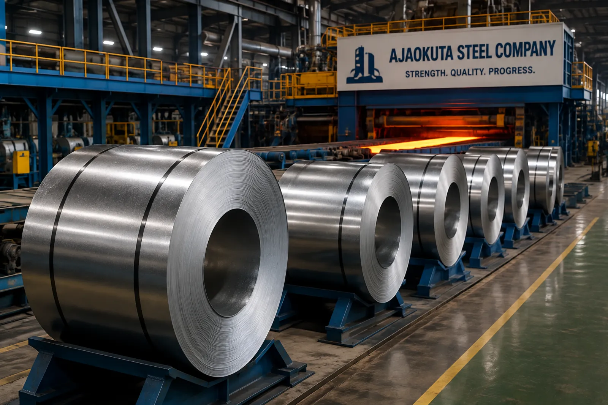

Find approved standards, laboratory procedures, research papers, technical reports and calibration records from one central departmental library.
Designed for Quality Assurance, Research and laboratory personnel, the library brings controlled technical information together so staff can find the right document quickly and work from the right revision.
Quality management, laboratory and environmental standards.
Metallurgy, materials science, steelmaking and process research.
Certificates, schedules, equipment records and references.
Approved procedures, work instructions and test methods.
Inspection, testing, quality and departmental reports.
Technical reference materials and staff development resources.

Keep critical quality information close to the people who use it — from chemical analysis and mechanical testing to calibration, inspection and research.
Explore technical resources